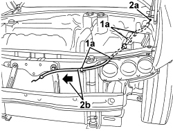

7025A28 BONNET LID OPENING CABLE - R R
- Path
- Procedures > 70 FITTINGS > 7025 COMPARTMENT COVERS > 7025A BONNET LID > 7025A28 BONNET LID OPENING CABLE - R R
- Kind
- repair procedure (removal / refitting; the operation number is the code)
- Applies to
- all engines; all production periods
- Interactive page
- https://sloeber94.github.io/elrnDB-aBrrSpdr/en/#/946002566
Applies to: all engines; all production periods
 Removing
Removing
 Refitting
RefittingOp. 7025A24 BONNET LID OPENING LEVER - R+R
Op. 7055B54 UNDER ENGINE PROTECTION/GUARD - R.R.
Op. 7025A34 BONNET LID LOCK (ONE) - R+R OR REPAIR
Op. 5530B52 BATTERY SUPPORT/DRIP TRAY - R.R
1. Release retainers (1a) of transmission cable (1b).
2. Fit a sensor to the end (2a) of the transmission cable (1b), then extract the transmission cable (2b), leaving the sensor in its place (to be used for reinserting the cable when refitting).

Applies to: all engines; all production periods
Refitting
Removing- Check that the control cable is not damaged.
- Use the probe to reinsert the transmission cable in its seat.
- Secure the bowden cable correctly to its retainers.
Op. 5530B52 BATTERY SUPPORT/DRIP TRAY - R.R
Op. 7025A34 BONNET LID LOCK (ONE) - R+R OR REPAIR